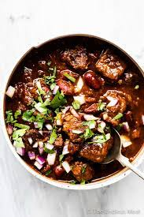

Steak Chili

Description
Steak chili is delicous. I eat it becuse it has a healthy amount of protein and taste.
nothing beats the amazing taste NOTHING beats the amazing taste and I mean it.
So come give it a try! you can subsitute the steak with other meat as well if you want.
Ingredients
- 2 tablespoons olive oil
- 2 pounds steak - cut into 1 inch cubes
- 2 onions, chopped
- 3 cloves garlic, minced
- 1 green chile pepper
- 2 tablespoons chili powder
- 1 tablespoon ground cumin
- 1 ½ teaspoons ground cayenne pepper
- 2 (29 ounce) cans diced tomatoes
- 1 (15 ounce) can kidney beans, drained
Steps
- In a large pot over medium high heat, combine the oil and steak and saute for about 5 minutes,
or until steak is browned. Add the onions, garlic and chile pepper and saute for another 5 minutes,
or until the onions are translucent.
- Add the chili powder, cumin, cayenne pepper, tomatoes and kidney beans. Reduce heat to low, cover
and simmer for about one hour. Remove cover and simmer for another 30 minutes, or until you've
reached your desired thickness.